Projections as of Tue Oct 13, 1:10 PM ET · updated each Tuesday
NCAA 180 Week 6 matchups
90Games
1Ranked vs ranked
Closest projected gameOklahoma vs TCU · 0.04 pts · 50%
Biggest mismatchIllinois over Indiana by 81.8 · >99%
Game of the weekPortland State vs William & Mary · 87% / 13%
Ranked vs ranked 1 game
 #15 Portland State3-2 · Big Sky179.4
#15 Portland State3-2 · Big Sky179.4 #2 William & Mary5-0 · Big Sky141.3
#2 William & Mary5-0 · Big Sky141.3
Ranked teams in action 23 games
- Rutgers1-4 · Big East145.6
 #23 Coastal Carolina4-1 · Big East135.1
#23 Coastal Carolina4-1 · Big East135.1  Notre Dame1-4 · Big East147.0
Notre Dame1-4 · Big East147.0 #4 Syracuse4-1 · Big East137.7
#4 Syracuse4-1 · Big East137.7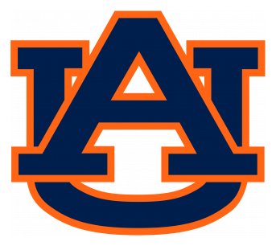
#20 Auburn4-1 · SEC162.0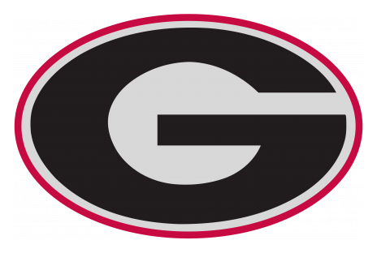
Georgia3-2 · SEC98.3 Mississippi State2-3 · SEC149.4
Mississippi State2-3 · SEC149.4 #11 Kentucky5-0 · SEC142.8
#11 Kentucky5-0 · SEC142.8 #10 Colorado5-0 · PAC 12145.9
#10 Colorado5-0 · PAC 12145.9 Oregon State3-2 · PAC 12128.1
Oregon State3-2 · PAC 12128.1 #1 Washington State5-0 · PAC 12169.6
#1 Washington State5-0 · PAC 12169.6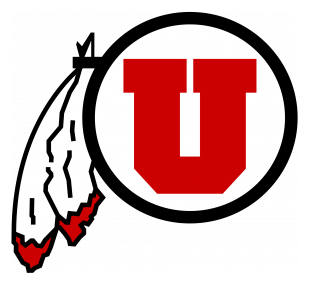
Utah1-4 · PAC 12137.5 #9 Arizona State4-1 · PAC 12170.0Washington3-2 · PAC 12122.6
#9 Arizona State4-1 · PAC 12170.0Washington3-2 · PAC 12122.6 North Carolina2-3 · ACC140.4
North Carolina2-3 · ACC140.4 #21 Clemson4-1 · ACC134.9
#21 Clemson4-1 · ACC134.9 #5 Baylor4-1 · Big 12174.5
#5 Baylor4-1 · Big 12174.5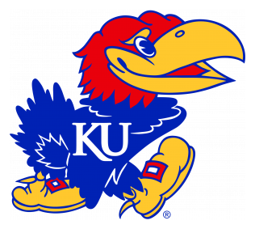
Kansas1-4 · Big 12121.2 #14 Kansas State5-0 · Big 12153.7
#14 Kansas State5-0 · Big 12153.7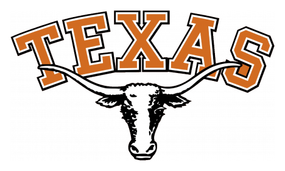
Texas2-3 · Big 12113.1- Temple4-1 · Sun Belt157.8
 #17 Southern Miss4-1 · Sun Belt141.4
#17 Southern Miss4-1 · Sun Belt141.4  #16 Campbell5-0 · Pioneer143.9
#16 Campbell5-0 · Pioneer143.9 Murray State3-2 · Pioneer132.2
Murray State3-2 · Pioneer132.2 #12 Brown4-1 · Ivy157.4
#12 Brown4-1 · Ivy157.4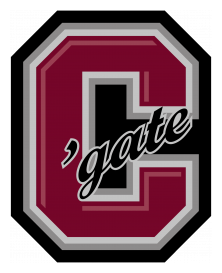
Colgate2-3 · Ivy151.7 #25 Georgetown3-2 · Ivy152.1
#25 Georgetown3-2 · Ivy152.1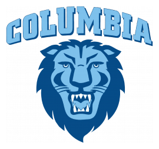
Columbia4-1 · Ivy147.2 #6 Dartmouth5-0 · Ivy163.8Lehigh2-3 · Ivy124.1
#6 Dartmouth5-0 · Ivy163.8Lehigh2-3 · Ivy124.1 #8 Middle Tennessee State5-0 · CUSA139.3
#8 Middle Tennessee State5-0 · CUSA139.3 Florida International2-3 · CUSA106.3
Florida International2-3 · CUSA106.3 #22 North Carolina A&T4-1 · HBCU159.6
#22 North Carolina A&T4-1 · HBCU159.6 Mississippi Valley State3-2 · HBCU122.2
Mississippi Valley State3-2 · HBCU122.2 #3 Hawaii4-1 · Mountain West178.3
#3 Hawaii4-1 · Mountain West178.3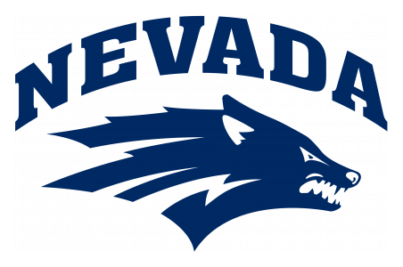
Nevada2-3 · Mountain West108.0 #18 BYU5-0 · Mountain West143.5
#18 BYU5-0 · Mountain West143.5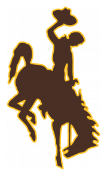
Wyoming2-3 · Mountain West134.0 #24 Old Dominion4-1 · Wild165.5
#24 Old Dominion4-1 · Wild165.5 Central Arkansas2-3 · Wild124.9
Central Arkansas2-3 · Wild124.9 #13 Iowa4-1 · Big 10159.6
#13 Iowa4-1 · Big 10159.6 Purdue5-0 · Big 10129.6
Purdue5-0 · Big 10129.6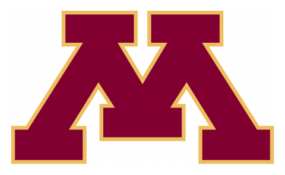
#19 Minnesota4-1 · Big 10161.3 Michigan3-2 · Big 10158.2
Michigan3-2 · Big 10158.2 #7 Youngstown State5-0 · Big Sky138.7
#7 Youngstown State5-0 · Big Sky138.7 Northern Iowa0-5 · Big Sky71.2
Northern Iowa0-5 · Big Sky71.2
All other games 66 games
 Boston College2-3 · ACC160.3
Boston College2-3 · ACC160.3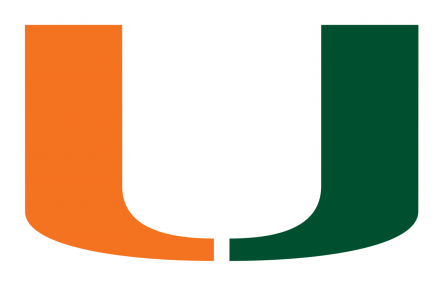
Miami1-4 · ACC118.9 FSU4-1 · ACC144.6Duke2-3 · ACC113.4
FSU4-1 · ACC144.6Duke2-3 · ACC113.4 Georgia Tech4-1 · ACC144.5
Georgia Tech4-1 · ACC144.5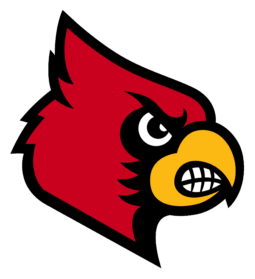
Louisville0-5 · ACC123.7- Virginia3-2 · ACC144.7
 NC State3-2 · ACC142.3
NC State3-2 · ACC142.3  Virginia Tech3-2 · ACC136.1
Virginia Tech3-2 · ACC136.1 Wake Forest2-3 · ACC124.1
Wake Forest2-3 · ACC124.1- Illinois3-2 · Big 10149.9Indiana1-4 · Big 1068.0
- Nebraska2-3 · Big 10129.0
 Penn State3-2 · Big 10119.4
Penn State3-2 · Big 10119.4  Ohio State3-2 · Big 10136.4Northwestern1-4 · Big 10105.2
Ohio State3-2 · Big 10136.4Northwestern1-4 · Big 10105.2- Wisconsin1-4 · Big 10140.1
 Michigan State0-5 · Big 10127.5
Michigan State0-5 · Big 10127.5 - Oklahoma3-2 · Big 12125.3TCU1-4 · Big 12125.2
 Texas A&M3-2 · Big 12131.5
Texas A&M3-2 · Big 12131.5 Iowa State2-3 · Big 12125.2
Iowa State2-3 · Big 12125.2 Texas Tech1-4 · Big 12149.1
Texas Tech1-4 · Big 12149.1 Missouri4-1 · Big 12130.8
Missouri4-1 · Big 12130.8 West Virginia4-1 · Big 12133.7
West Virginia4-1 · Big 12133.7 Oklahoma State0-5 · Big 12116.4
Oklahoma State0-5 · Big 12116.4- Navy3-2 · Big East130.6USF1-4 · Big East126.6
- Pittsburgh5-0 · Big East132.6Maryland0-5 · Big East103.9
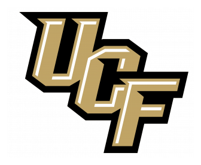
UCF3-2 · Big East152.9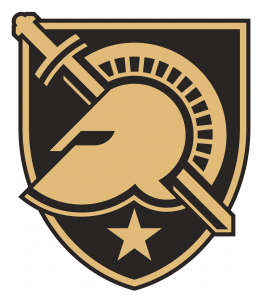
Army4-1 · Big East131.6- UCONN3-2 · Big East146.2
 South Dakota State1-4 · Big East137.4
South Dakota State1-4 · Big East137.4  Montana State2-3 · Big Sky166.8
Montana State2-3 · Big Sky166.8 Stony Brook3-2 · Big Sky139.8
Stony Brook3-2 · Big Sky139.8 Rhode Island1-4 · Big Sky129.5
Rhode Island1-4 · Big Sky129.5 Eastern Washington4-1 · Big Sky128.3
Eastern Washington4-1 · Big Sky128.3- Richmond3-2 · Big Sky138.9
 Weber State0-5 · Big Sky81.4
Weber State0-5 · Big Sky81.4 - Villanova3-2 · Big Sky120.5
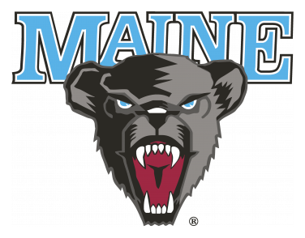
Maine1-4 · Big Sky106.3  Arkansas State3-2 · CUSA136.3
Arkansas State3-2 · CUSA136.3 South Alabama4-1 · CUSA126.0
South Alabama4-1 · CUSA126.0 Florida Atlantic1-4 · CUSA144.1
Florida Atlantic1-4 · CUSA144.1 North Texas1-4 · CUSA143.2
North Texas1-4 · CUSA143.2 Georgia State4-1 · CUSA157.4
Georgia State4-1 · CUSA157.4 Louisiana Monroe4-1 · CUSA117.0
Louisiana Monroe4-1 · CUSA117.0- Troy1-4 · CUSA152.2
 Texas State4-1 · CUSA130.5
Texas State4-1 · CUSA130.5  Western Kentucky1-4 · CUSA148.1
Western Kentucky1-4 · CUSA148.1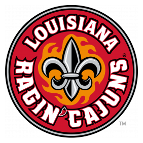
Louisiana0-5 · CUSA118.3 Bethune - Cookman2-3 · HBCU117.4
Bethune - Cookman2-3 · HBCU117.4 Alabama A&M1-4 · HBCU89.4
Alabama A&M1-4 · HBCU89.4 Delaware State3-2 · HBCU140.6Tuskegee3-2 · HBCU135.1
Delaware State3-2 · HBCU140.6Tuskegee3-2 · HBCU135.1 Florida A&M3-2 · HBCU141.0
Florida A&M3-2 · HBCU141.0 Alcorn State3-2 · HBCU137.7
Alcorn State3-2 · HBCU137.7 Grambling State2-3 · HBCU143.5
Grambling State2-3 · HBCU143.5 Jackson State0-5 · HBCU117.8
Jackson State0-5 · HBCU117.8- Southern3-2 · HBCU164.5
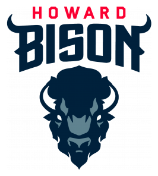
Howard3-2 · HBCU108.4 - Cornell4-1 · Ivy132.8Yale1-4 · Ivy114.0
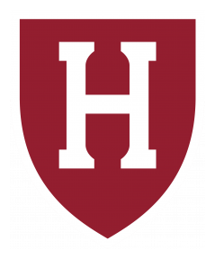
Harvard2-3 · Ivy133.5Penn2-3 · Ivy83.3- Princeton1-4 · Ivy116.7Bucknell0-5 · Ivy115.1
 Boise State0-5 · Mountain West131.7
Boise State0-5 · Mountain West131.7 New Mexico2-3 · Mountain West117.7
New Mexico2-3 · Mountain West117.7 Fresno State2-3 · Mountain West147.7
Fresno State2-3 · Mountain West147.7 San Diego State3-2 · Mountain West134.5
San Diego State3-2 · Mountain West134.5- NIU1-4 · Mountain West127.9
 Air Force1-4 · Mountain West106.8
Air Force1-4 · Mountain West106.8 - UNLV4-1 · Mountain West148.2
 Colorado State4-1 · Mountain West139.1
Colorado State4-1 · Mountain West139.1 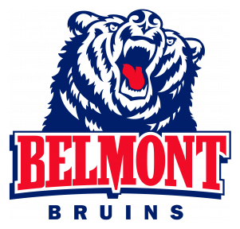
Belmont4-1 · Ohio Valley148.9Delaware3-2 · Ohio Valley127.0 Charleston Southern2-3 · Ohio Valley122.8
Charleston Southern2-3 · Ohio Valley122.8 Jacksonville State2-3 · Ohio Valley109.9
Jacksonville State2-3 · Ohio Valley109.9- Chattanooga3-2 · Ohio Valley145.5
 Eastern Kentucky2-3 · Ohio Valley131.6
Eastern Kentucky2-3 · Ohio Valley131.6 - ETSU3-2 · Ohio Valley147.7Monmouth4-1 · Ohio Valley132.7
 Morehead State1-4 · Ohio Valley116.2
Morehead State1-4 · Ohio Valley116.2 Kennesaw State1-4 · Ohio Valley114.0
Kennesaw State1-4 · Ohio Valley114.0 North Carolina Central2-3 · Ohio Valley160.0
North Carolina Central2-3 · Ohio Valley160.0 North Alabama3-2 · Ohio Valley157.5
North Alabama3-2 · Ohio Valley157.5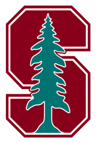
Stanford2-3 · PAC 12143.4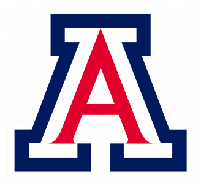
Arizona0-5 · PAC 12103.5- UCLA3-2 · PAC 12121.2California2-3 · PAC 12118.6
- USC2-3 · PAC 12137.9Oregon0-5 · PAC 1292.2
 Austin Peay3-2 · Pioneer146.7Dayton2-3 · Pioneer126.2
Austin Peay3-2 · Pioneer146.7Dayton2-3 · Pioneer126.2- Butler3-2 · Pioneer140.8
 SE Missouri State2-3 · Pioneer136.1
SE Missouri State2-3 · Pioneer136.1 - Davidson3-2 · Pioneer138.7
 Tennessee State1-4 · Pioneer107.4
Tennessee State1-4 · Pioneer107.4  Holy Cross2-3 · Pioneer137.7Wofford0-5 · Pioneer100.7
Holy Cross2-3 · Pioneer137.7Wofford0-5 · Pioneer100.7 UT Martin4-1 · Pioneer159.5Furman2-3 · Pioneer124.1
UT Martin4-1 · Pioneer159.5Furman2-3 · Pioneer124.1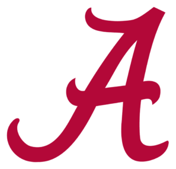
Alabama2-3 · SEC134.9Vanderbilt1-4 · SEC104.0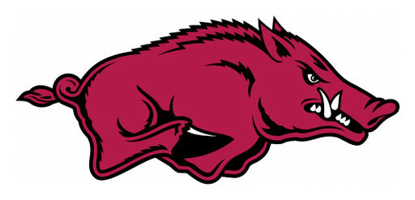
Arkansas1-4 · SEC128.0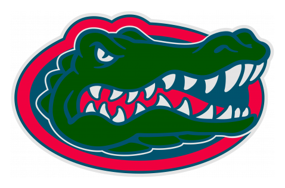
Florida1-4 · SEC115.7- LSU4-1 · SEC141.9Tennessee1-4 · SEC130.1
 South Carolina4-1 · SEC166.8
South Carolina4-1 · SEC166.8 Ole Miss2-3 · SEC115.0
Ole Miss2-3 · SEC115.0 Louisiana Tech3-2 · Sun Belt145.2
Louisiana Tech3-2 · Sun Belt145.2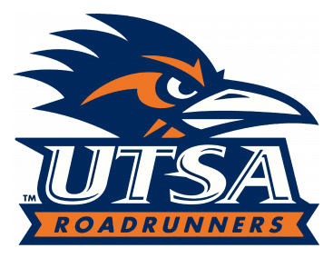
UTSA2-3 · Sun Belt135.2- Marshall3-2 · Sun Belt148.2Memphis3-2 · Sun Belt122.6
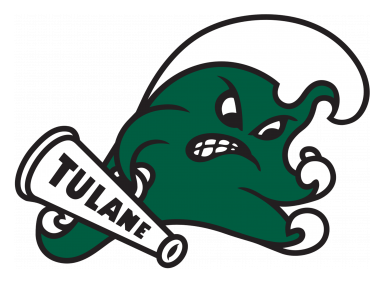
Tulane2-3 · Sun Belt138.3Rice1-4 · Sun Belt116.7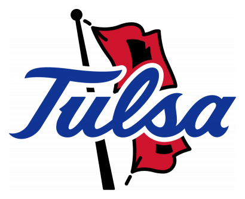
Tulsa4-1 · Sun Belt167.6 Georgia Southern3-2 · Sun Belt117.0
Georgia Southern3-2 · Sun Belt117.0- UTEP1-4 · Sun Belt126.2UAB0-5 · Sun Belt119.0
 James Madison3-2 · Wild136.4
James Madison3-2 · Wild136.4 San Jose State0-5 · Wild111.3
San Jose State0-5 · Wild111.3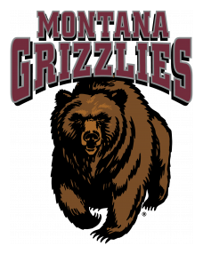
Montana3-2 · Wild151.2 Eastern Michigan1-4 · Wild147.7
Eastern Michigan1-4 · Wild147.7 South Dakota4-1 · Wild135.0
South Dakota4-1 · Wild135.0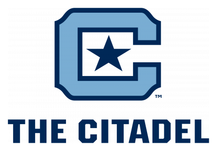
Citadel2-3 · Wild126.7 UNC Charlotte3-2 · Wild133.3
UNC Charlotte3-2 · Wild133.3 North Dakota State3-2 · Wild115.8
North Dakota State3-2 · Wild115.8 Wichita State3-2 · Wild139.2
Wichita State3-2 · Wild139.2 Central Michigan2-3 · Wild108.9
Central Michigan2-3 · Wild108.9
Projected score = each roster's best projected lineup (Sleeper projections, each league's scoring), not the lineup the manager ends up starting. Win chance assumes each team scores within about ±24 points of its projection (backtest 2021–2025: picks the winner 73% of the time). Raw CSV